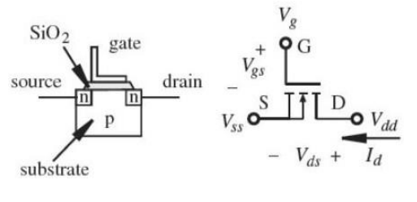
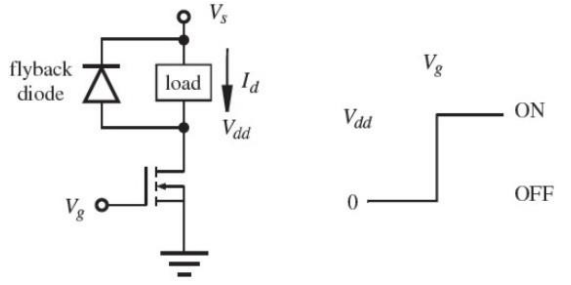
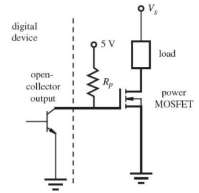
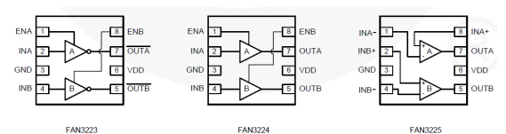

MOSFETS and MOSFET Drivers
Metal Oxide Field Effect Transistor (MOSFETs)
-
MOSFETs are similar in appearance to BJT’s however their operation is completely different.
-
BJT’s are current activated devices whereas MOSFETS are voltage activated

Fig. 1 n-channel enhancement-mode MOSFET
-
In order to switch on a enhancement-mode MOSFET the gate to source voltage must be greater than or equal to the drain voltage once the devices threshold voltage has been exceeded.
-
For the MOSFET to be switched on:
\[V_{gs} - V_{t} \ge V_{dd} \]
Where \(V_t\) is the devices threshold voltage typically 2V
MOSFET applications
- MOSFETS are typically used to switch power to a load, for example switching on a motor from a microcontroller.

Fig 2. The MOSFET will switch on when \(V_{gs} - V_{t} \ge V_{dd}\)
- Driving a MOSFET from an open collector digital device

Fig 3. The MOSFET Open Collector
- The MOSFET will switch on when the gate to source voltage is greater than or equal to Vs
MOSFET Drivers
-
MOSFETS have an insulated gate that acts as a current barrier. No current (or very little) flows into the MOSFET gate. This is the advantage of the MOSFET over theBJT since it requires little power to turn on.
-
The insulated gate also behaves as a capacitance that requiressome charging\discharging before the device can be switchedon\off.
-
If the MOSFET is to be switched at high speed then this capacitancemust be charged\discharged at high speed also.
-
Since \(I = C\frac{dv}{dt}\) to charge discharge at high speed requires a large current tobe forced into the gate.
-
MOSFET drivers are available to do just this task.

Fig 4. Fairchild low side gate driver
Example MOSFET switching
A MOSFET has a gate capacitance of 1000nF and requires a high switching speed of 3µs. Would it be possible for a microcontroller with a 5V digital output, such as an Arduino, to achieve this switching speed? Explain your answer.
A MOSFET has a gate capacitance of 1000nF and requires a high switching speed of 3µs. Would it be possible for a microcontroller with a 5V digital output, such as an Arduino, to achieve this switching speed? Explain your answer.
Using \(I = C\frac{dv}{dt}\)
\(C\frac{dv}{dt} = 1000\cdot10^{-9} \cdot (\frac{5}{3\cdot10^{-6}} ) = 1.67A \)
It would not be possible to drive this FET at this speed using the output of a microcontroller as the typical drive current of these devices is only 40 mA. The FET may turn on, but the output would be distorted and may overheat.